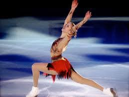
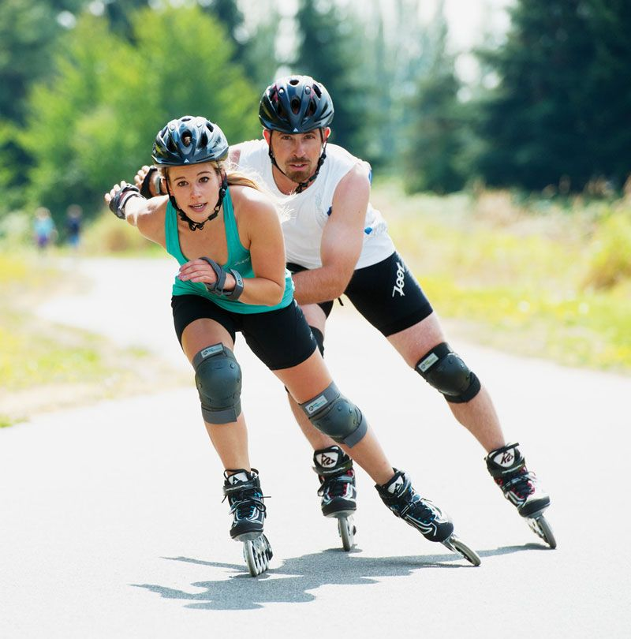
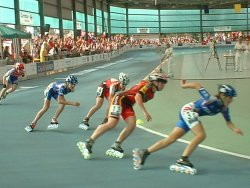
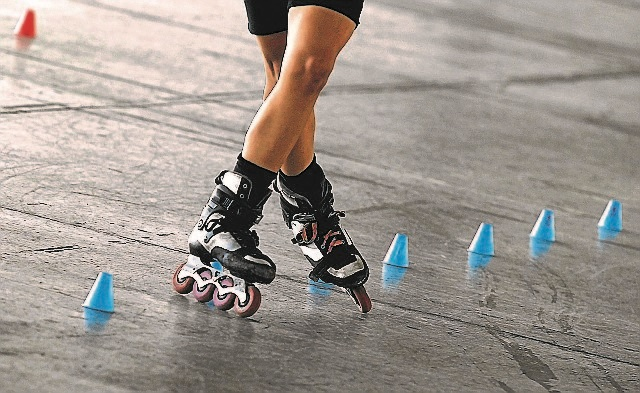

TIPOS DE PATINAJE
| NOMBRE | DESCRIPCIÓN | IMAGEN |
|---|
| Patinaje artístico sobre ruedas |
Es una disciplina deportiva pensada para que los patinadores compitan entre ellos con patines de ruedas.
Se asemeja mucho al artístico sobre hielo con la salvedad del uso de las ruedas quads. En cuanto a los patines
usados existen diferencias, por ejemplo: los patines de figuras obligatorias que no llevan freno o los artísticos
en línea con freno y con una guía concreta para los giros. |
 |
| Fitness skating o patinaje para fitness |
Es sin duda el patinaje de toda la vida y por ende es el más mayoritario. Cuenta con la ventaja de dar la
libertad al patinador de practicar su deporte favorito a su gusto. Desde realizar rutas por la ciudad, pasando
por parques o recintos acotados al efecto, hasta enfundarse sus patines para ir al trabajo. Muchos usuarios usan
este estilo de patinaje como ejercicio para mejorar su resistencia física. |
 |
| Speed skating o patinaje de velocidad |
Un patinador de velocidad puede alcanzar los 60km/hora siempre y cuando patine sobre la pista ideal. Este
estilo cuenta con muchísimos seguidores en todo el mundo gracias a la adrenalina que genera la velocidad en el
patinador. Cada año se producen maratones de velocidad a lo largo y ancho del planeta, copando ciudades como
Londres, Montreal o Berlín. Esta modalidad tiene a su vez tres subgéneros: Patinaje de velocidad sobre hielo,
patinaje de velocidad sobre pista corta y patinaje de velocidad sobre patines en línea. ¡Para amantes de la
adrenalina! |
 |
| Freestyle o patinaje con conos |
Es el segundo en popularidad y consiste en poner conos en el suelo, delimitando una ruta concreta. Los
patinadores realizan Slalom con figuras y acrobacias en el suelo. |
 |